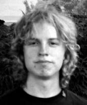

Ordförande/grundare
Presentation: Jag har intresserat mig för
klingonska sedan i gymnasiet, och kan i dagsläget tillräckligt för
att kunna hålla en stapplande konversation. (Tilläggas kan att den
första frasen jag lärde mig var bImoHqu' "Du är väldigt
ful." - Inte för att jag vet vad det säger om
mig. =|:-)) Sedan dess har jag bland annat skapat en
fickordbok, varit på Klingonska
Språkinstitutets qep'a' i Philadephia i
(där bl.a. fick chansen att träffa språkets upphovsman, Marc
Okrand). Sedan våren undervisar jag (tillsammans med
qa'naQ) i en studiecirkel i klingonska, och i juli samma år
drog vi igång Klingonska Akademien.
|
|

Ständig sekreterare
Presentation: Jag hade knappt tittat på
Star Trek innan maHvatlh introducerade mig till tlhIngan
Hol, men jag blev snart fängslad av det annorlunda språket,
och man lär ju se Star Trek för att få se riktiga klingoner och
höra riktig klingonska, så numera kan jag nog räknas som
trekker. Jag är en av "veteranerna" i Uppsala och sedan qep'a'
SochDIch i Philadelphia () kan jag konversera
hjälpligt på klingonska. Min ambition är att ha bra uttal och
framför allt en genuin klingonsk stil, något det slarvas med
alltför ofta. Särskilt ogillar jag när ens modersmål smittar av
sig på klingonskan. Nybörjare är alltid förlåtna, men man bör
försöka tänka direkt i klingonska så mycket som möjligt.
|
| ©, Copyright Zrajm C Akfohg, Klingonska Akademien, Uppsala. | ||